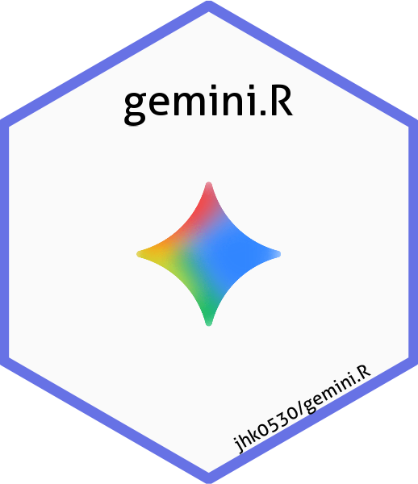

Changelog
Source:NEWS.md
gemini.R 0.5.1
0.4.0
- Updated to use httr2
-
setAPInow shows last 4 words of API key for confirmation. -
catupdated using cli for better readability in console. -
gemini_image()takes default prompt as “Explain this image” and example image of flower. See?gemini_image